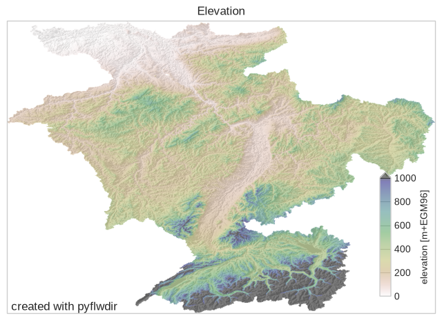
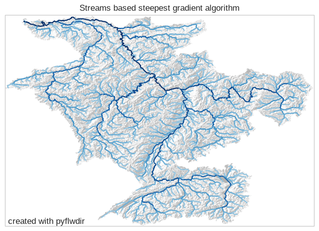

Tip
Flow directions from elevation data#
Flow directions are typically derived from conditioned, high-resolution digital elevation models (DEMs) using the steepest-gradient method. This method selects the lowest adjacent cell as the downstream cell. HydroMT implements the algorithm proposed by Wang & Liu (2006), which is used in this example.
[1]:
import matplotlib.pyplot as plt
import numpy as np
import rasterio
from matplotlib import cm, colors
from utils import quickplot # data specific quick plot convenience method
import pyflwdir
# read elevation data of the rhine basin using rasterio
with rasterio.open("rhine_elv0.tif", "r") as src:
elevtn = src.read(1)
nodata = src.nodata
transform = src.transform
crs = src.crs
extent = np.array(src.bounds)[[0, 2, 1, 3]]
latlon = src.crs.is_geographic
prof = src.profile
[2]:
ax = quickplot(title="Elevation")
im = ax.imshow(
np.ma.masked_equal(elevtn, -9999),
extent=extent,
cmap="gist_earth_r",
alpha=0.5,
vmin=0,
vmax=1000,
)
fig = plt.gcf()
cax = fig.add_axes([0.8, 0.37, 0.02, 0.12])
fig.colorbar(im, cax=cax, orientation="vertical", extend="max")
cax.set_ylabel("elevation [m+EGM96]")
# plt.savefig('elevation.png', dpi=225, bbox_axis='tight')
[2]:
Text(0, 0.5, 'elevation [m+EGM96]')

Derive flow direction#
Here we use the from_dem() method to create a FlwDirRaster object from flow directions derived using the steepest-gradient algorithm. This method wraps dem.fill_depressions(), which returns a depression-filled elevation raster and a local flow-direction array following the ArcGIS D8 convention.
The algorithm assumes that outlets lie along the edge of valid elevation cells. It fills depressions to their lowest pour-point elevation. If a depression is deeper than the maximum pour-point depth (max_depth), it leaves a pit at the depression’s local minimum elevation (not used in this example). To route all flow toward a single outlet at the lowest edge cell, set outlets='min'. The transform and latlon arguments define the geospatial location of the data.
NOTE: The first call to most methods may be slow because Numba compiles the code just in time. Subsequent calls to the same method, even with different arguments, are usually much faster!
[3]:
# returns FlwDirRaster object
flw = pyflwdir.from_dem(
data=elevtn,
nodata=src.nodata,
transform=transform,
latlon=latlon,
outlets="min",
)
We visualize the derived flow directions by plotting streams with a minimum Strahler order of 4 using the streams() method.
[4]:
import geopandas as gpd
feats = flw.streams(min_sto=4)
gdf = gpd.GeoDataFrame.from_features(feats, crs=crs)
[5]:
# create nice colormap of Blues with less white
cmap_streams = colors.ListedColormap(cm.Blues(np.linspace(0.4, 1, 7)))
gdf_plot_kwds = {"column": "strord", "cmap": cmap_streams}
# plot streams with hillshade from elevation data (see utils.py)
ax = quickplot(
gdfs=[(gdf, gdf_plot_kwds)],
title="Streams based steepest gradient algorithm",
filename="flw_streams_steepest_gradient",
)

Save flow direction raster#
With the to_array() method we can return a flow direction numpy array from the FlwDirRaster object in any supported convention. This can be saved to a geospatial raster file using rasterio as shown below.
[6]:
d8_data = flw.to_array(ftype="d8")
d8_data
[6]:
array([[247, 247, 247, ..., 247, 247, 247],
[247, 247, 247, ..., 247, 247, 247],
[247, 247, 247, ..., 247, 247, 247],
...,
[247, 247, 247, ..., 247, 247, 247],
[247, 247, 247, ..., 247, 247, 247],
[247, 247, 247, ..., 247, 247, 247]], shape=(682, 997), dtype=uint8)
[7]:
# update the data type and nodata properties, which differ from the input elevation grid, and write to GeoTIFF
prof.update(dtype=d8_data.dtype, nodata=247)
with rasterio.open("flwdir.tif", "w", **prof) as src:
src.write(d8_data, 1)